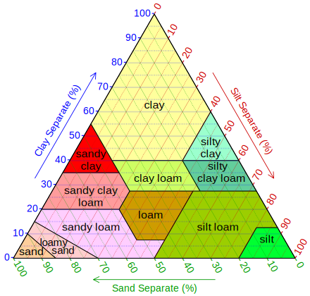
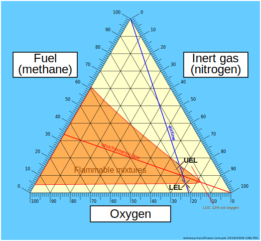
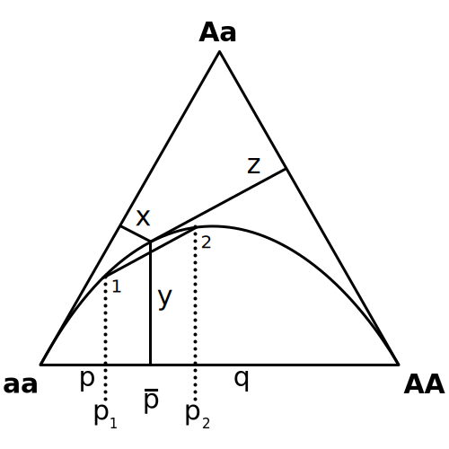
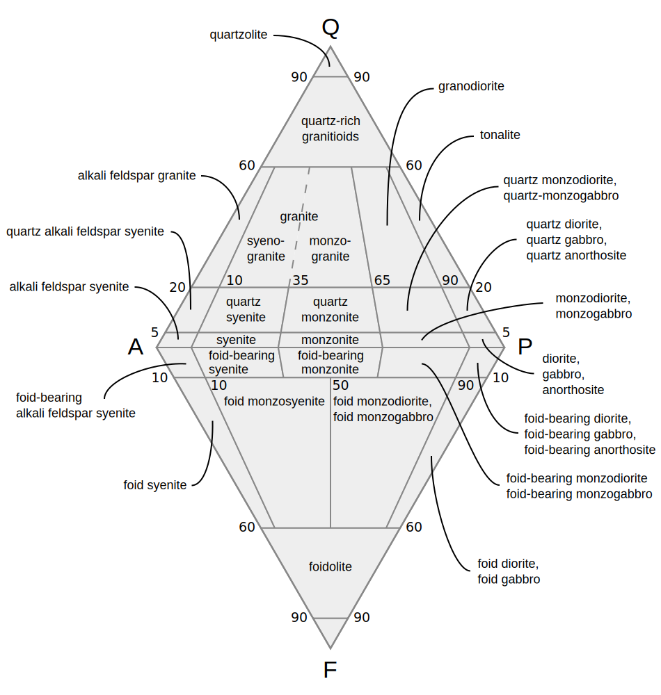
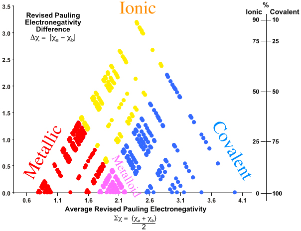
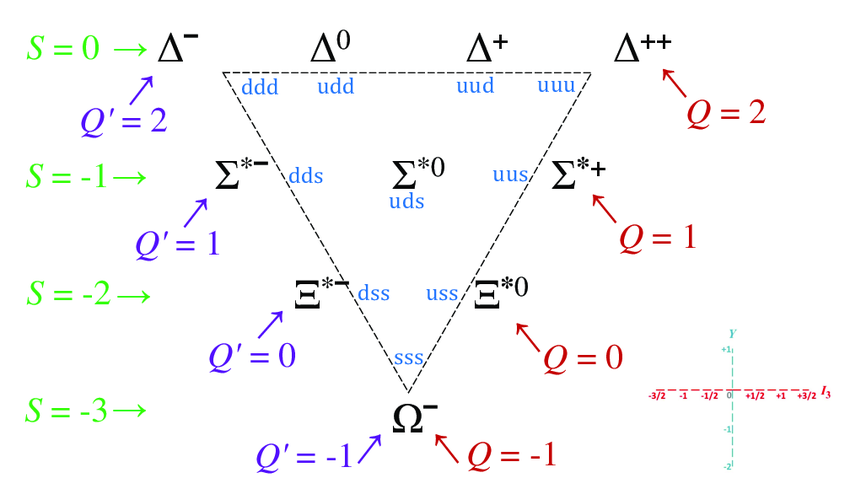

<html></html>
<head>
    <title>Ternary plots are underrated</title>
    <link rel="stylesheet" href="../../style.css">
    <meta name="viewport" content="width=device-width, initial-scale=1">
    <script type="text/javascript" src="https://cdn.jsdelivr.net/npm/mathjax@2/MathJax.js?config=TeX-AMS-MML_HTMLorMML">
    </script>
</head>
<body>
    <h2><a href="/">Adam Scherlis</a></h2>
    <h1>Ternary plots are underrated</h1>
    <em>2025-11-10</em>
<p>My <a href="https://adam.scherl.is/blog/grapefruit/">previous post</a> contains a ternary plot of citrus fruits. Here it is again (<a href="https://commons.wikimedia.org/wiki/File:Citrus_tern_cb_simplified_1.svg">source</a>):</p>
<p></p>
<p>Ternary plots are great! They're used in a number of specialized fields, but I think they would be more widely popular if people were more familiar and comfortable with them. Let's make it happen.</p>
<p>Look at the citrus fruit plot. Every data point on that plot corresponds to a species of citrus, whose ancestry is some mixture of mandarins, pomelos, and citrons. The three corners are the ancestral species themselves, which are 100% themselves and 0% anything else. To take an example from somewhere inside the plot, most lemons are about 20% pomelo, 30% mandarin, and 50% citron. You can read that off from the grid lines: mandarin ancestry is shown by vertical position, with 0%-mandarin fruits along the bottom of the triangle and the mandarin itself at the top. The "lemons" cluster is about 30% of the way up (between the yellow horizontal lines marked "20%" and "40%"), so it's 30% mandarin. Similarly, lemons are 20% of the way from the right edge (0% pomelo) to the bottom-left corner (100% pomelo).</p>
<p>Note that there are three variables (percent pomelo/mandarin/citron ancestry), but they are not independent; they always sum to 100%, so there are only two independent "degrees of freedom". This is why you can make a two-dimensional plot of the three-dimensional data.</p>
<p>The one confusing thing about ternary plots is that the axis lines are usually only marked on one edge. For example, the horizontal lines marking mandarin ancestry are labeled on the right-hand side; on the left, you instead have angled labels in blue, which correspond to the sloped lines for pomelo ancestry. Most ternary plots don't use different colors in the helpful way this one does; I think the best way to read them is to look at a corner (100% of something), identify the opposite edge (0% of that thing), find the lines parallel to that edge, and read off the labels on whichever side of the triangle is oriented to match those lines. (If the labels aren't helpfully rotated to match up with the lines, you can instead go with whichever side reaches 100% at the corner and 0% at the side in question.)</p>
<h2>Use case</h2>
<p>You can (and should) use a ternary plot to display any kind of quantitative data with:</p>
<ol>
<li>Three numerical components to each data point</li>
<li>All components non-negative (positive or zero)</li>
<li>A constraint on the sum of the three components</li>
</ol>
<p>Actually, if you instead have a constraint on a different linear combination of the components, you can still make (something like) a ternary plot; it just won't be an equilateral triangle. If the second rule (non-negativity) doesn't apply you can <em>still</em> make a ternary plot, but some points will fall outside the triangle, so you'll have to extend your grid lines.</p>
<p>The rest of this post is fun examples.</p>
<h2>Mixing diagrams</h2>
<p>Most ternary diagrams are for mixtures of things, where the sum constraint corresponds to the fact that percentages have to add to 100%. The citrus fruit diagram is one example.</p>
<p><a href="https://commons.wikimedia.org/wiki/File:SoilTexture_USDA.svg">This</a> mixing diagram for soil has gone somewhat viral:</p>
<p></p>
<p>Clay, silt, and sand have a technical definition in terms of grain size. Below .05mm, sand becomes silt; below .002mm, silt becomes clay. So this plot gives a sort of low-dimensional projection of the infinite-dimensional space of granular mixtures. In fact, you can think of an arbitrary granular mixture as having a sort of spectrum of grain sizes, described by a spectral density function, and this plot shows a two-dimensional quotient of the vector space of those functions...</p>
<p>Speaking of spectra, one can also make a ternary plot for RGB colors! <a href="https://commons.wikimedia.org/wiki/File:CIExy1931_sRGB_gamut_D65.png">Here</a> it is, embedded in the broader space of all possible colors:</p>
<p></p>
<p>The colors outside the triangle are too saturated to be displayed on a standard computer screen. The horseshoe shape is a little harder to explain; maybe in a future post.</p>
<p></p>
<p><a href="https://commons.wikimedia.org/wiki/File:Flammability_diagram_methane.svg">This</a> plot shows the conditions for a mixture of methane, nitrogen, and oxygen to be flammable. (Note that the grid-line labels are oriented unhelpfully, so you have to be careful about using the correct scale when reading off percentages.)</p>
<p></p>
<p>And <a href="https://commons.wikimedia.org/wiki/File:De_Finetti_diagram.svg">here</a>'s one for frequencies of different alleles.</p>
<h2>Other ternary plots</h2>
<p><a href="https://en.wikipedia.org/wiki/QAPF_diagram">QAPF diagrams</a> are basically two mixing triangles glued together:</p>
<p></p>
<p>Sums and differences of the electronegativities of a pair of atoms can be used to construct a sort of ternary diagram of bond types, called a <a href="https://www.meta-synthesis.com/webbook/37_ak/triangles.php">van Arkel--Ketalaar triangle</a>:</p>
<p></p>
<p>The baryon decuplet is often drawn in a sort of ternary diagram of quark content -- although the chart slightly predates the idea of quarks:</p>
<p></p>
<p>(<a href="https://www.researchgate.net/publication/382614169_On_the_Energy_Budget_of_Quarks_and_Hadrons_Their_Inconspicuous_Strong_Charge_and_the_Impact_of_Coulomb_Repulsion_on_the_Charged_Ground_States">source</a>)</p>
<p>Actually, there's some deep math behind that: the triangular lattice appears here as the root lattice of the Lie group <script type="math/tex">A_2</script>, also known as <script type="math/tex">SU(3)</script>. In most derivations, the lattice itself shows up as a diagonal slice through a 3D Cartesian grid; the lattice points are all the points with integer coordinates that sum to zero.</p>
<p>Ternary plots are also used in astrophysics, for non-gaussian statistics (measurements involving a triangle of three points in the sky at once). Unfortunately, these are usually displayed with two axes for ratios of edge lengths of the triangle, instead of as a ternary plot of the three <em>angles</em>, which sum to 180 degrees. Also, they're Fourier-transformed.</p>
<p></p>

</body>
</html>